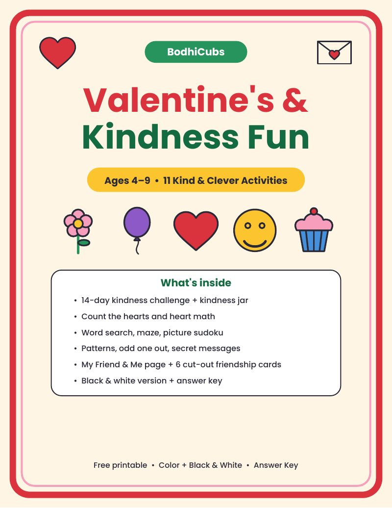
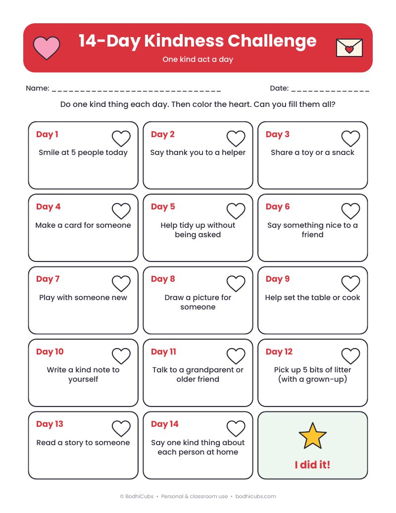
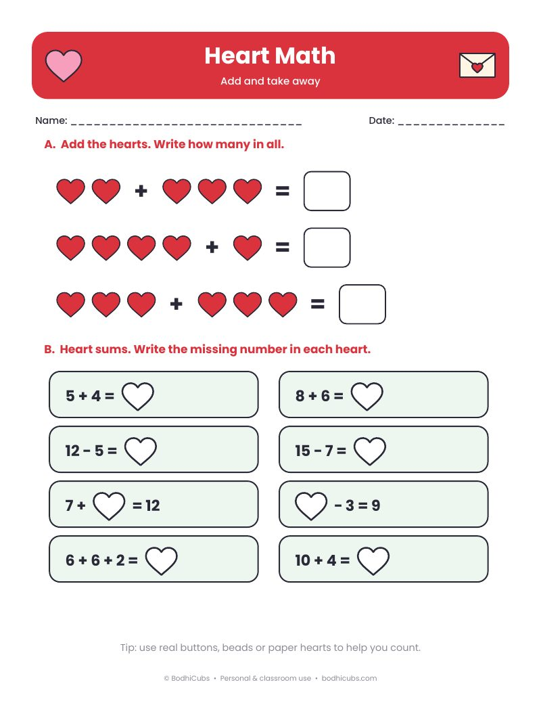
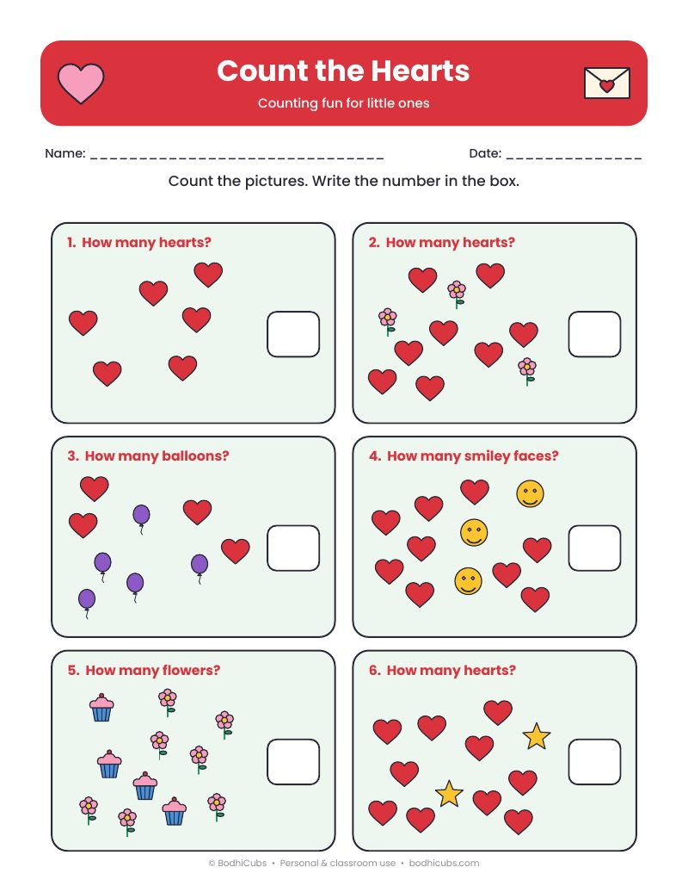
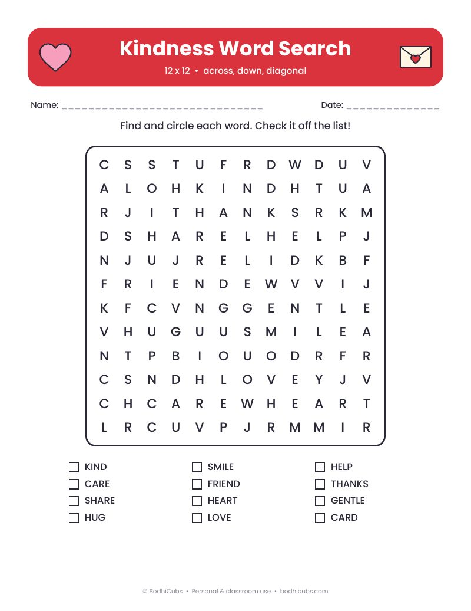
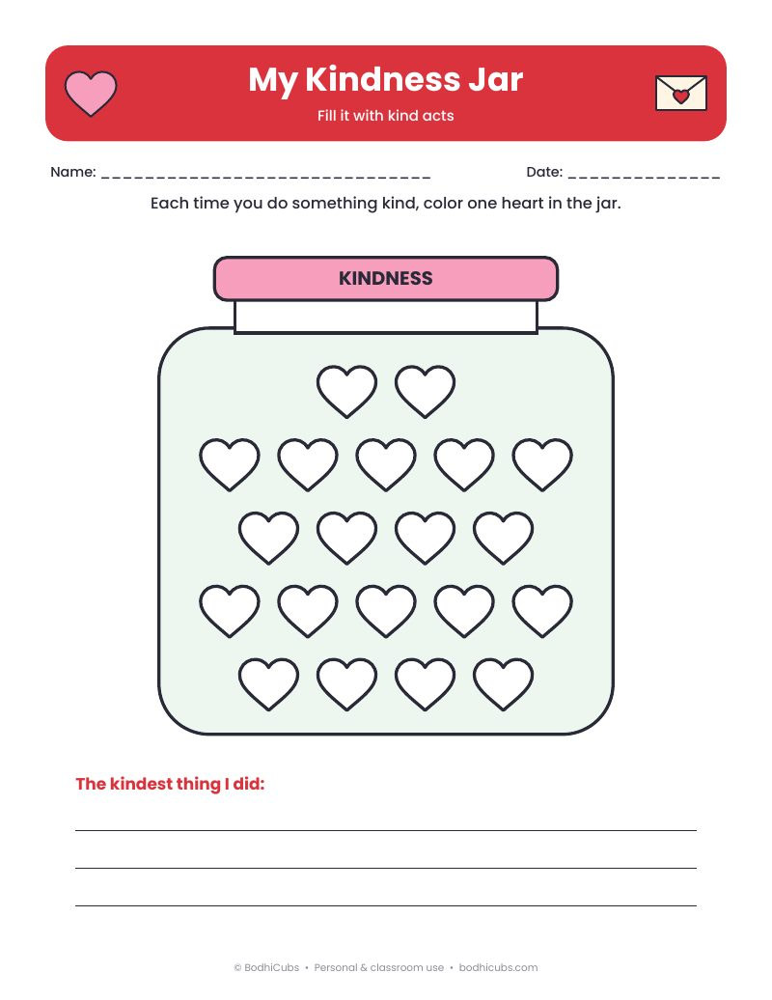
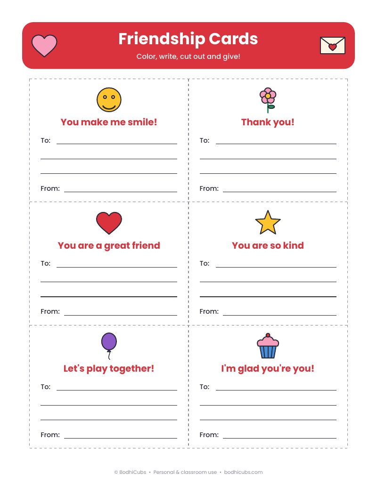

What's inside
- 14-Day Kindness Challenge: one kind act a day
- My Kindness Jar: color a heart for every kind thing you do
- Count the Hearts (ages 4–6) and Heart Math (ages 6–9)
- Odd One Out & What Comes Next
- 4 picture sudoku puzzles, a letter maze and a kindness word search
- Secret Kind Messages code-breaker page
- My Friend & Me drawing and writing page
- 6 cut-out friendship cards to color and give
- Black & white version of every page + answer key
Prints on US Letter and A4 – just choose “Fit to page” in your print settings. No sign-up needed.
Kindness activities for Valentine's Day, or any day
Valentine's Day on 14 February is a lovely time to talk with children about friendship, caring and being kind. This free pack keeps the focus on kindness rather than romance, so it works at home and in any classroom, wherever you live. Use it for Valentine's week, a kindness week at school, or whenever you want to practise friendly habits.
Younger children (ages 4–5) can start with Count the Hearts, the patterns, the maze, the Kindness Jar and the friendship cards with a little help. Older children (ages 6–9) will enjoy Heart Math, the word search, picture sudoku and decoding the Secret Kind Messages. The 14-Day Kindness Challenge is great for the whole family or class: one small kind act each day, with a heart to color when it is done.
Everything is in one PDF. Low on color ink? Print the black & white pages in the middle of the file – kids can color them in themselves. Answers are at the end, so you can check quickly or let children mark their own work.
Page previews






Free for personal and classroom use. Please share this page link rather than the file. Want more? Play free science games, Brain Gym and puzzles at BodhiCubs · More free printables